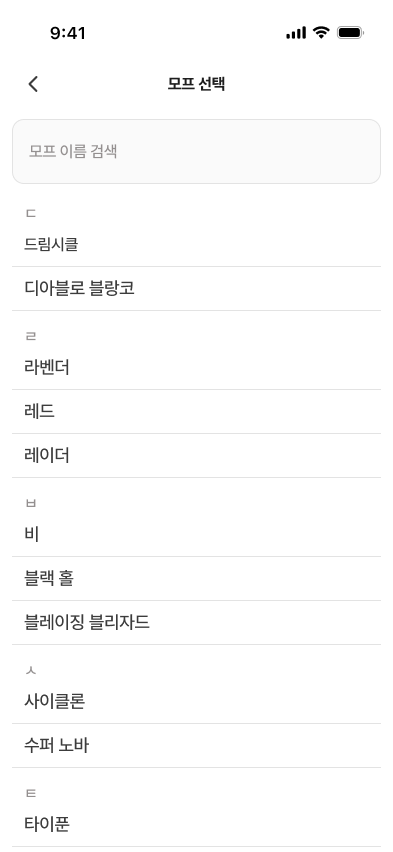
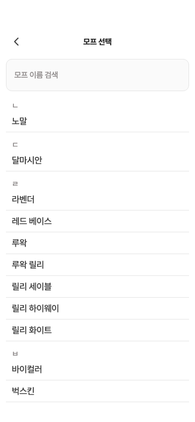
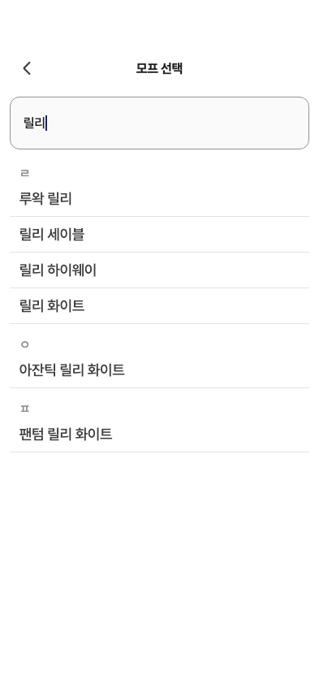

29 · 모프 선택 기본 목록
244 수정 결과입니다. 초기화 제거 결정과 전체 화면·초성별 목록을 반영했습니다.
반영 내용
① 하단시트 → ‘모프 선택’ 제목/뒤로가기가 있는 전체 화면
② 카탈로그 순서 → 초성별 정렬·섹션·구분선
③ 한글+영문 두 줄 → 원본 한글 한 줄
④ 검색 문구 ‘모프 이름 검색’ · 원본에 없는 검색 아이콘 제거
기존 크레스티드 카탈로그는 유지합니다. Figma의 다른 종 모프 예시를 신규 데이터로 추가하지 않습니다.
Figma · 모프 선택 전체 화면
수정 제품 위젯 · 244
확정 반영: ‘선택 안함’ 초기화 행을 제거했습니다. 항목 선택 시 바로 반영하고 뒤로가기는 기존 값을 유지합니다.
수정 후 검색 · 선택 결과


한글·영문 검색→선택→폼 반영 및 뒤로가기 보존을 테스트했습니다. 원본 첫 예시 행16pt와 달리 앱은 일반 행18pt를 적용했습니다. 실제 제품 위젯 캡처이며 OS 키보드는 포함하지 않습니다.
수치·동작·수정 방향